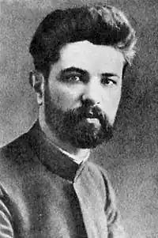

Рід Сергія Олександровича Єфремова (по материнській лінії — Крамаренко, по батьківській — Охріменко) належав до духовенства. Первісне прізвище "Охріменки" було перелицьоване на "Єфремових" уже в XIX столітті: в духовних школах була тоді звичка (про неї згадує Мордовець у "Дзвонарі") змінювати прізвища на латинський або великоруський штиб." (А. Кримський. Життєпис і літературна діяльність С О. Єфремова, 1921).
Народився С. О. Єфремов 23 вересня (6 жовтня) 1876 року в селі Пальчик Звенигородського повіту на Київщині в сім'ї сільського священика. Освіту здобув у Київській духовній семінарії, а 1901 року закінчив юридичний факультет Київського університету.
Впродовж усього життя працював як дослідник літератури, виступав як публіцист, видавець, активний громадський діяч. Був засновником української демократично-радикальної партії, "Товариства українських поступовців", "Української партії соціал-федералістів", у Центральній Раді десь близько місяця обіймав посаду секретаря міжнаціональних справ. 1920 року емігрував за кордон, через рік після загальної амністії повернувся й займався науковою роботою. Академік Всеукраїнської Академії наук з 1919, віце-президент ВУАН — з 1923 року. До арешту влітку 1929 року завідував історико-філологічним відділом академії, очолював Комісію для складання біографічного словника діячів України, Раду Історико-літературного товариства тощо. Щоденникові записи вченого, що їх долучено до справи "СВУ", засвідчують: Єфремов дуже критично ставився до політичних і господарських подій дореволюційної пори і практично ще в 20-х роках означив найболючіші точки радянської влади: проста людина в ній поставлена в таку залежність од держави, що перестає існувати як особистість; селянство приречене тільки на вимирання, бо держава забирає всю його продукцію; в суспільному житті панують брехня, доноси, провокації, пошлість, які становлять головні риси системи... За таких умов, на думку Єфремова, держава не зможе розвиватися, вона або задушить суспільне життя і сама загине, або суспільне життя знищить державу. Тому він зробив висновок: "не приймаю системи на брехні й провокації, на світовому дурилюдстві заснованої". Ці думки вченого стали найбільшим козирем у руках слідчих і суддів на процесі "Спілки визволення України", головою якої нібито був академік Єфремов. З-поміж трьох тисяч публікацій Єфремова виділяються його численні монографії, антології, збірники статей, присвячені творчості І.Котляревського, Т.Шевченка, Марка Вовчка, Панаса Мирного, І.Франка, І.Нечуя-Левицького, І.Карпенка-Карого, М.Коцюбинського та ін. Підсумковою роботою Єфремова як історика і теоретика літератури стала "Історія українського письменства" в двох томах (1924). Ця праця викликала свого часу і викликає до сьогодні різні критичні судження, насамперед за обраний ученим критерій аналізу й оцінки українських літературних явищ, починаючи від фольклору й кінчаючи творами, що написані 1923 року. Свій критерій Єфремов сформулював так: історія літератури — це історія ідей. Українська література, на думку вченого, утверджувала три основні ідеї: ідея свободи людини, національно-визвольна ідея, ідея народності в змісті й формі. Вказуючи на те, що за своїм світоглядом Єфремов наближався до так званої російської суб'єктивістської школи в соціології, опоненти закидали йому суто соціальний підхід до явищ літератури та ігнорування ним естетичного підходу. Про цю особливість "Історії..." Єфремова Микола Зеров писав: "Вона дала канон українського письменства, установила список авторів і творів, належних до історико-літературного розгляду... Цей канон тільки помалу переробляється тепер, залежно від нових матеріалів та нових поглядів на історико-літературні явища". Після арешту в 1929 році Єфремов кілька місяців не визнавав, що належав до міфічної "Спілки визволення України". Інші заарештовані (їх було 45) теж твердили, що вперше почули про СВУ під час слідства. Та це не зупиняло фальсифікаторів. Вони продовжували витискувати з арештантів "зізнання", і Єфремов врешті-решт змушений був з гіркою іронією "зізнатися", що очолював нібито у 1920-1924 роках "Братство української державності" ("БУД"), заснував у 1926 році СВУ, яка мала на меті реставрацію старого ладу. Про інсинуацію щодо збройного повстання проти радянської влади він сказав: "...Ця мілітаристська фантастика не спиралася на солідні аргументи, її просто не приймали на віру, і треба було втратити відчуття дійсності, щоб будувати на ній якісь політичні розрахунки". На лаві підсудних опинилися 26 учених, три письменники, два студенти, один священик, 14 учителів та службовців різних установ. Це був один з перших ударів по українській інтелігенції, яку в наступних роках спіткав найбільший погром за всю історію України. За рішенням суду, який відбувався впродовж сорока днів у Харківському оперному театрі (за переказами, громадськість називала це дійство так: "Опера СВУ — музика ДПУ"), С.Єфремова засуджено на 10 років позбавлення волі (тоді найвища міра покарання). Помер він 10 березня 1939 року в одному з таборів ГУЛАГу за три місяці до закінчення строку покарання. Пленум Верховного суду УРСР 11 серпня 1989 року С. Єфремова разом з усіма, засудженими у справі СВУ, реабілітував, оскільки в його діях не виявлено складу злочину. ЛУ 31(4440) 1.08.1991